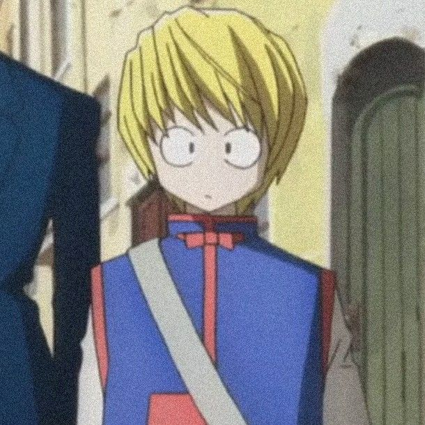
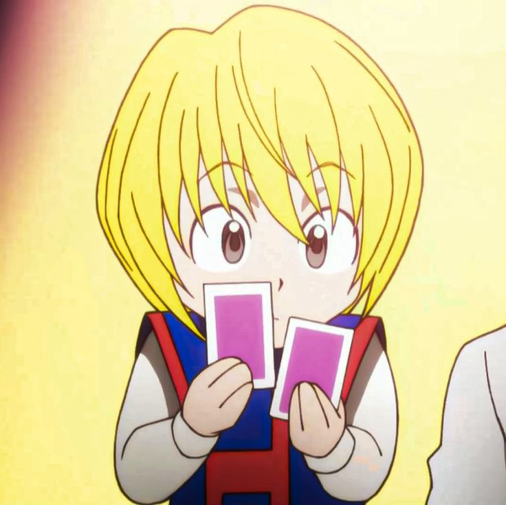

👁️ Scarlet Eyes are extremely important to Kurapika—they are tied to his Kurta heritage.
⛓️ His Dowsing Chain can help him detect lies and locate things.
⚖️ His Judgment Chain can be placed around a person's heart and enforce a condition.
🕷️ His Chain Jail was specifically designed to restrain members of the Phantom Troupe.
👑 Kurapika's Emperor Time is one of his most powerful abilities.
⏳ In the manga, Emperor Time has a serious drawback: each second costs him lifespan.
🧠 Kurapika often wins through planning and clever use of Nen, rather than raw strength.
📚 During the manga's Succession Contest arc, Kurapika takes on a major role.
👶 He becomes involved in protecting Prince Woble during the Succession Contest.
🛡️ Kurapika teaches Nen to other people aboard the Black Whale.
🔴 His Scarlet Eyes can dramatically change his appearance.
⛓️ Kurapika's chains are connected to his five fingers, with each chain having a different purpose.
💙 His revenge is not his only motivation—he also wants to recover the stolen Scarlet Eyes.
🕵️ He spends much of the manga investigating mysteries and dangerous situations.
😭 Kurapika's story becomes increasingly serious as the manga progresses.
👥 He is one of the four central characters introduced at the beginning of Hunter × Hunter.
🧩 His Nen abilities have strict conditions, making them more powerful.
🎯 His abilities show how important self-imposed restrictions are in Nen.
🕯️ The manga explores Kurapika's struggle between revenge and protecting others.
✨ Kurapika is especially interesting because his intelligence and Nen restrictions are just as important as his
fighting
ability.
haii!
👑 Emperor Time — His most powerful Nen ability. It allows him to use all six Nen categories at 100% efficiency.
⛓️ Holy Chain — A healing chain that can repair injuries.
🕵️ Dowsing Chain — Can be used to locate people or objects and can help Kurapika detect lies.
⚔️ Judgment Chain — A chain that can enter a person's body and impose a rule or condition.
🔒 Chain Jail — Restrains an opponent completely. Kurapika made this ability specifically for the Phantom Troupe.
⚡ Steal Chain — Allows Kurapika to steal and temporarily use another person's Nen ability.
🧠 Stealth Dolphin — A Nen beast created through Steal Chain that helps Kurapika analyze and use stolen abilities.
💪 Enhanced physical abilities — His Scarlet Eyes and Nen training can greatly improve his combat abilities.
🎯 Strategic thinking — One of Kurapika's greatest strengths is combining his abilities with careful planning and strict
conditions.
⚠️ Manga detail: Emperor Time has a huge cost: every second it is active reduces Kurapika's lifespan by one hour.

:3